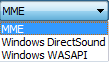
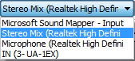
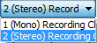
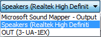

Device Toolbar
| The Device Toolbar is NOT displayed by default in Audacity. To enable it, click on and check on Device Toolbar. |
Resizer
Using the resizer handle at right, you can expand Device Toolbar rightwards to be wider than the default width shown, or drag it leftwards to be less wide. You can hover over any of the four boxes in Audacity at any time to see the full text for the selected item.
Audio Host
- 
Selects the particular interface with which Audacity communicates with your chosen playback and recording devices.
On Windows, the choice is between the following audio interfaces:
- MME: This is the Audacity default and the most compatible with all audio devices. Audacity cannot record at greater 16-bit with MME as the host.
- Windows DirectSound: This is more recent than MME and had potentially less latency. Current versions of Windows still support DirectSound for backward compatibility, but with limitations.
- Windows WASAPI: This host is the most recent Windows interface between applications (such as Audacity) and the audio interface driver. WASAPI was first officially released in 2007. WASAPI is particularly useful for loopback recording of computer playback. 24-bit recording devices are supported using this host.
- Selecting WASAPI and enabling both "Exclusive Mode" boxes in Windows Sound allows Audacity to request audio direct from the device without resampling.
- Windows WASAPI host only records loopback when there is an active signal present. When there is no active signal, recording pauses and will restart once an active signal resumes.
- If you are using WASAPI to record from an external USB device (soundcard) then the output must also be directed to the same USB device or you will get an error message "Error opening recording device..." when trying to record or monitor. Note that this is usually impossible for USB turntables and USB tapedecks as they have no sound output.
| The proprietary ASIO interface standard is essential on Windows for low latency recording and playback. It is also usually the best way of making multi-channel recordings on Windows. Licensing restrictions prevent us including ASIO support in released versions of Audacity, but Audacity can be compiled with ASIO support for private, non-distributable use. See ASIO Audio Interface which summarizes ASIO licensing issues and steps to compile Audacity with ASIO support. |
On Mac the only choice is Core Audio.
On Linux there is often only one option: ALSA. Other options could be OSS and/or Jack Audio Connection Kit (also known as "Jack" or "Jackd").Recording Device
- 
Choose the built-in or attached sound device that you want to use for recording.
In the image above, "Microsoft Sound Mapper - Input" appears when the Windows "MME" Audio Host is selected. Similarly to the "Mapper" output, the "Mapper" input is the device that is the current default Windows recording device. When "Windows DirectSound" Audio Host is selected, the device that maps to the current Windows recording device is called "Primary Sound Capture Driver".
In most cases (for example, the inbuilt computer sound device), each entry for recording device consists of the type of device (such as microphone), followed in parentheses by the name of the sound card manufacturer.
On Mac, the internal sound card recording inputs are usually referred to as "Built-in".
On GNU/Linux, recording is often managed by the pulse sound server. It is normally best to select "default". That will choose whatever is the system default sound card or server, then choose the exact input device required in the control application for the card or server (such as Pulse Audio Volume Control). The (hw:) recording devices give direct, lower latency access to the audio interface inputs, bypassing any sound servers. For a built-in (hw:) sound device, choose the exact inputs in ALSAmixer.
| If you attach or disconnect an external device while Audacity is open, use to update the device lists before playing or recording. |
Recording Channels
- 
1 (Mono), 2 (Stereo) or the number of channels that are provided by the drivers of your sound device. On most inbuilt sound devices, especially on Windows, only mono or stereo will be available. For some devices on Windows, choosing "Windows DirectSound" or "WASAPI" in Audio Host may be more likely to reveal options for recording more than two channels. On some devices capable of recording more than two channels, an explicit "multi" device may appear in the Device dropdown for recording all the channels simultaneously.
- If your recording device is mono, such as most microphone ports for the inbuilt sound device, it is recommended to set the number of recording channels to "1 (mono)". Selecting "2 (Stereo)" in Recording Channels may duplicate the mono source to both channels (merely producing a dual mono recording), or may give audio in one channel and silence in the other.
- Mono recording devices should also be set to 1 channel mono in the system or sound device control panel.
- If your recording device is stereo, then as well as setting Recording Channels to "2 (Stereo)", ensure any settings in the system or sound device control panels are stereo. Many input devices on Windows default to mono recording even if they are stereo devices.
- Typically, USB audio devices with two inputs will send their first input to left/mono, and their second channel to the right channel of a stereo track.
| If you are recording a two-channel stereo source input signal with Audacity set as 1 (Mono) Tecording Channel to record in mono then only the left channel will be recorded. |
Playback Device
- 
Choose the built-in or attached sound device that you want to use for playback.
In the image above, "Microsoft Sound Mapper - Output" appears when the Windows "MME" Audio Host is selected. This "Mapper" device is not a separate playback device, but is the device that is currently chosen as the default system playback device in the Windows Control Panel. When "Windows DirectSound" Audio Host is selected, the device that maps to the current Windows playback device is called "Primary Sound Driver".
In most other cases (for example, the inbuilt computer sound device), each entry for playback device consists of the type of playback device (such as speakers), followed in parentheses by the name of the sound card manufacturer (such as Realtek, Soundmax or IDT Audio).
On Mac, the internal sound card playback device is usually referred to as "Built-in".
On GNU/Linux, playback is often managed by a sound server or mixer such as pulse or dmix. It is normally best to select "default". This will choose whatever is the system default playback device or server. The (hw:) playback devices give direct, lower latency access to the sound card output, bypassing any sound servers.